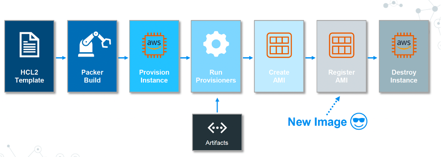

Documentation Packer
Sites Internet utiles
Commandes
Warning
Attention à la commande packer utilisée. Un autre binaire packer présent sur l'OS peut rentrer en conflit.
[almalinux@fd201 ~]$ rpm -qf /usr/sbin/packer
cracklib-dicts-2.9.6-27.el9.x86_64
export PATH=/usr/bin:$PATH
[root@fd201 ~]# which packer
/usr/bin/packer
packer version- Afficher la version-
packer -autocomplete-install- Installer l'autocompletion -
packer validate [-syntax-only] base-image.pkr.hcl- Valider un template JSON ou HCL packer fmt [-check] [-diff] base-image.pkr.hcl- Formatter correctement un template HCL-
packer inspect base-image.pkr.hcl- Visualiser les composants (Variables, Builds, Sources, Provisioners, Post-processors) d'un template JSON ou HCL -
packer fix old-template.json > new-template.json- Fixer des templates d'anciennes versions de packer (uniquement au format json) -
packer hcl2_upgrade base-image.json- Transformer un template au format JSON en format HCL2 -
packer build [-var-file=vars.pkr.hcl] base-image.pkr.hcl- Builder un template packer build [-var-file=vars.pkr.hcl] /data/packer/templates- Builder tous les templates du répertoire /data/packer/templates-
packer console- Créer une console pour tester des variables ou interpolation -
packer init- XXX packer plugins- XXXxxx- XXXxxx- XXX
Variables d'environnement
export PACKER_LOG=1- Activer les logs (Disable par défaut)export PACKER_LOG_PATH=/data/packer/log/packer.log- Configurer le chemin du fichier de log (plutôt que stderr)export PKG_VAR_xxx- Définir une variable en utilisant ENV plutôt que dans un template
Installation et Administration

Sample